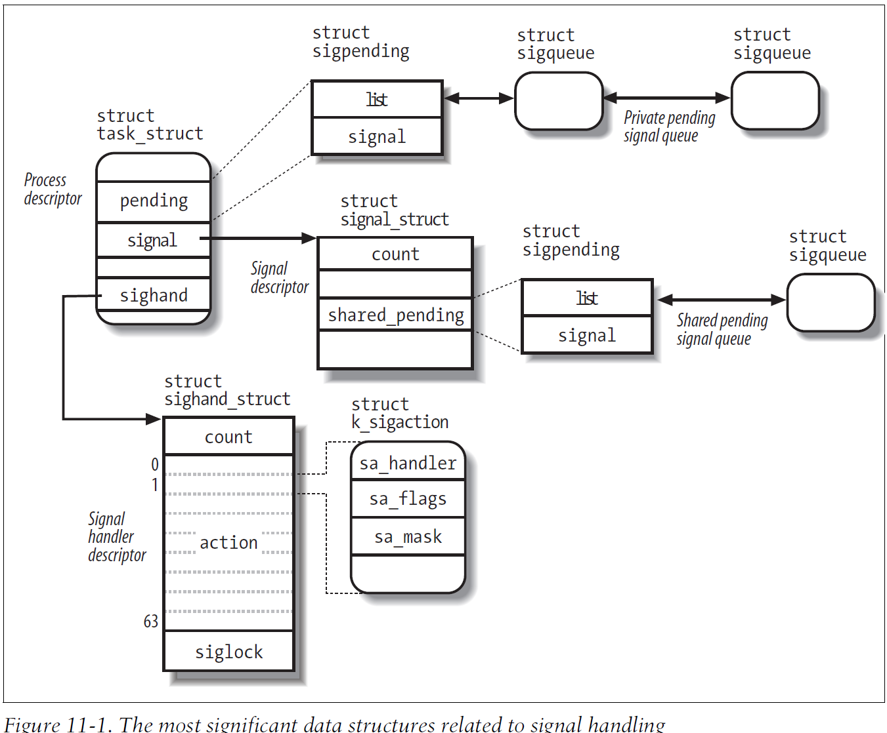
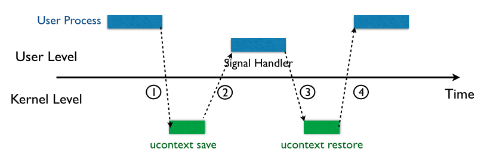
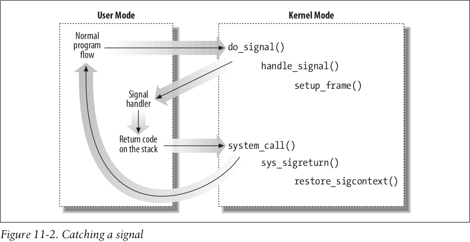
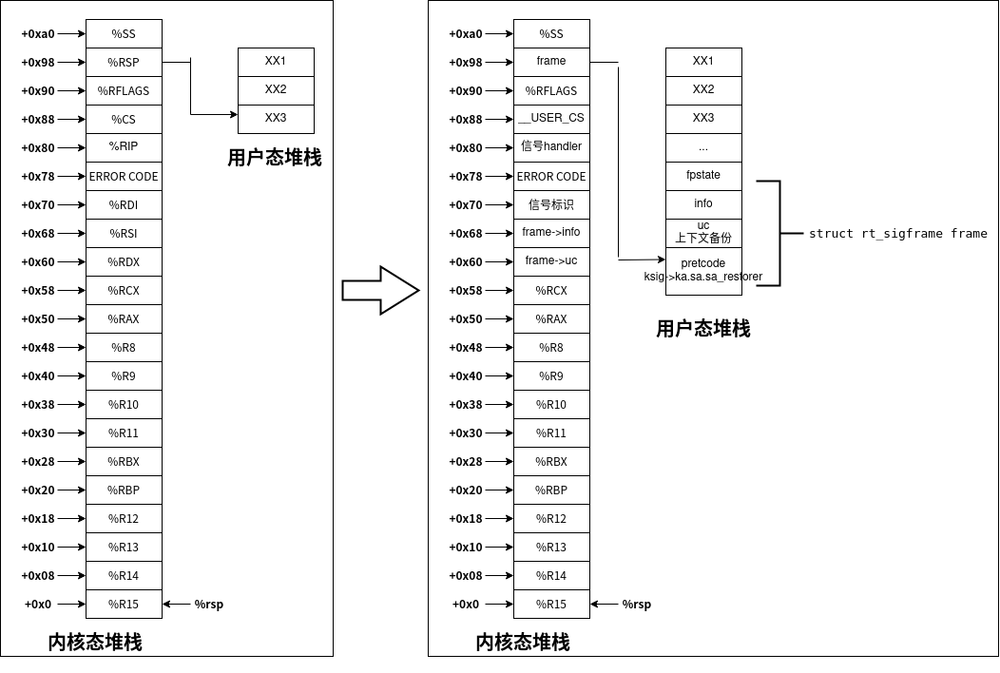
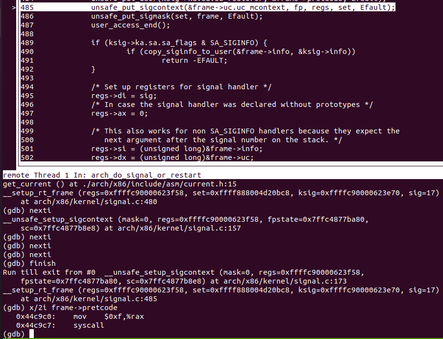

linux内核学习-八
前言
本篇博客将研究Linux内核的信号机制
信号机制一开始用于用户态进程间的通信，现在也被内核用于通知进程所发生的事件
信号简介
信号(signal)是很短的消息，可以被发送到一个进程或一个进程组。其发送的信息通常是一个数，以此标识信号。
信号的作用
使用信号的两个主要目的是
- 让进程知道已经发生了一个特定的事件
- 强迫进程执行自己代码中的信号处理程序
信号
基于80x86架构的Linux内核所处理的信号定义与arch/x86/include/uapi/asm/signal.h
| 编号 | 信号名称 | 缺省操作 | 解释 | POSIX |
|---|---|---|---|---|
| 1 | SIGHUP | Terminate | 挂起控制终端或进程 | 是 |
| 2 | SIGINT | Terminate | 来自键盘的中断 | 是 |
| 3 | SIGQUIT | Dump | 从键盘退出 | 是 |
| 4 | SIGILL | Dump | 非法指令 | 是 |
| 5 | SIGTRAP | Dump | 追踪的断点 | 否 |
| 6 | SIGABRT | Dump | 异常结束 | 是 |
| 6 | SIGIOT | Dump | 等价于SIGABRT | 否 |
| 7 | SIGBUS | Dump | 总线错误 | 否 |
| 8 | SIGFPE | Dump | 浮点异常 | 是 |
| 9 | SIGKILL | Terminate | 强迫进程终止 | 是 |
| 10 | SIGUSR1 | Terminate | 对进程可用 | 是 |
| 11 | SIGSEGV | Dump | 无效的内存引用 | 是 |
| 12 | SIGUSR2 | Terminate | 对进程可用 | 是 |
| 13 | SIGPIPE | Terminate | 向无读者的管道写 | 是 |
| 14 | SIGALRM | Terminate | 实时定时器时钟 | 是 |
| 15 | SIGTERM | Terminate | 进程终止 | 是 |
| 16 | SIGSTKFLT | Terminate | 协处理器栈错误 | 否 |
| 17 | SIGCHLD | Ignore | 子进程停止、结束或在被跟踪时，获得信号 | 是 |
| 18 | SIGCONT | Continue | 如果已停止，则恢复执行 | 是 |
| 19 | SIGSTOP | Stop | 停止进程执行 | 是 |
| 20 | SIGTSTP | Stop | 从tty发出停止进程 | 是 |
| 21 | SIGTTIN | Stop | 后台进程请求输入 | 是 |
| 22 | SIGTTOU | Stop | 后台进程请求输出 | 是 |
| 23 | SIGURG | Ignore | 套接字上的紧急条件 | 是 |
| 24 | SIGXCPU | Dump | 超过CPU时限 | 否 |
| 25 | SIGXFSZ | Dump | 超过文件大小的限制 | 否 |
| 26 | SIGVTALRM | Terminate | 虚拟定时器时钟 | 否 |
| 27 | SIGPROF | Terminate | 概况定时器时钟 | 否 |
| 28 | SIGWINCH | Ignore | 窗口调整大小 | 否 |
| 29 | SIGIO | Terminate | I/O现在可能发生 | 否 |
| 30 | SIGPWR | Terminate | 电源供给失效 | 否 |
| 31 | SIGSYS | Dump | 坏的系统调用 | 否 |
| 31 | SIGUNUSED | Dump | 等价于SIGSYS | 否 |
信号处理
信号的一个重要特点就是可以随时被发送给状态进程不可预知的进程。如果信号发送给非运行进程，则该信号需要由内核保存，直到该进程恢复执行为止。
因此，内核将信号处理的流程划分为两个不同阶段
- 信号产生
内核更新目标进程的数据结构，标识该信号已被发送 - 信号传递
内核强迫目标进程通过以下方式，对信号做出反应：或改变目标进程的执行状态，或开始执行一个特定的信号处理程序，或两者都是
每个所产生的信号至多被传递一次，并且一旦被传递出去，目标进程描述符中有关该信号的所有信息都被取消。
对于已经产生，但并没有被传递的信号，被称为挂起信号(pending signal)。任何时候，一个进程仅存在给定类型的一个挂起信号，同一进程同种类型的其他信号不会排队，只是简单地被丢弃。
一般来说，信号处理会有如下性质
- 信号通常只被当前正运行的进程传递(即由current进程传递)
- 给定类型的信号，可以由进程选择性地阻塞。在这种情况下，在取消阻塞前，该进程将不接受这个信号
- 当进程执行一个信号处理函数时，通常屏蔽相应的信号，直到处理程序结束。因此，信号处理程序不必是可重入的
而上述描述的信号处理特征，要求内核必须
- 记住每个进程阻塞了那些信号
- 当从内核态切换到用户态时，对任何一个进程都要检查是否有信号到达
- 处理信号，即信号可能在进程运行期间的任意时刻，请求把进程切换到一个信号处理函数，并在该函数返回以后恢复原来执行的上下文
信号传递
如果进程对一个信号阻塞，则其不会被传递；只有在进程解除相应信号的阻塞后，进程才会传递对应的信号
进程以下列三种方式之一，对信号做出传递
- 显示地忽略信号。
- 执行与信号相关的缺省操作
- Terminate
进程被终止(杀死) - Dump
进程被终止(杀死)，并且，如果可能，创建包含进程执行上下文的核心转储文件 - Ignore
信号被忽略 - Stop
进程被停止，即把进程置为TASK_STOPPED状态 - Continue
如果进程被停止，则将其状态设置为TASK_RUNNING状态
- Terminate
- 调用相应的信号处理函数，捕获信号
需要注意的是，SIGKILL和SIGSTOP信号不可以被显示地忽略、捕获或阻塞，也就是其通常必须执行相应的缺省操作。
与信号相关的数据结构
Linux内核需要追踪当前什么信号正在挂起或被屏蔽，以及每个线程组是如何处理所有信号的。Linux内核中使用多个数据结构进行管理，其关系如下图所示

struct task_struct
Linux内核位于include/linux/sched.h的进程描述符中，包含诸多当前进程的相关信号信息。该结构体的重要的相关字段如下所示
| 类型 | 字段名称 | 描述 |
|---|---|---|
| struct signal_struct * | signal | 指向进程的信号描述符的指针 |
| struct sighand_struct __rcu * | sighand | 指向进程的信号处理程序描述符的指针 |
| sigset_t | blocked | 被阻塞信号的掩码 |
| sigset_t | real_blocked | 被阻塞信号的临时掩码 |
| struct sigpending | pending | 存放私有挂起信号的数据结构 |
| unsigned long | sas_ss_sp | 信号处理程序备用堆栈的地址 |
| size_t | sas_ss_size | 信号处理程序备用堆栈的大小 |
struct signal_struct
Linux内核使用位于include/linux/sched/signal.h的信号描述符，用来描述进程组共享的挂起信号和一些进程组的与信号处理关系不那么密切的资源。总而言之，信号描述符被属于同一线程组的所有进程共享，对属于同一线程组的每个进程而言，信号描述符中的字段必须都是相同的。该结构体的重要字段如下所示
| 类型 | 字段名称 | 描述 |
|---|---|---|
| refcount_t | sigcnt | 信号描述符的使用计数器 |
| atomic_t | live | 线程组中活动进程的数量 |
| wait_queue_head_t | wait_chldexit | 在系统调用wait4()中睡眠的进程的等待队列 |
| struct task_struct * | curr_target | 接受信号的线程组中最后一个进程的进程描述符 |
| struct sigpending | shared_pending | 存放共享挂起的信号的数据结构 |
| int | group_exit_code | 线程组的进程终止代码 |
| int | notify_count | 在杀死整个线程组时使用 |
| struct task_struct * | group_exec_task | 在杀死整个线程组时使用 |
| int | group_stop_count | 在停止整个线程组的时候使用 |
struct sighand_struct
Linux内核使用位于include/linux/sched/signal.h的信号处理程序描述符，从而描述线程组的每个信号必须怎样被处理。该结构体的重要字段如下所示
| 类型 | 字段名称 | 描述 |
|---|---|---|
| refcount_t | count | 信号处理程序描述符的使用计数器 |
| struct k_sigaction[64] | action | 线程组在传递信号时，所执行操作的结构数组 |
struct k_sigaction
由于信号处理的相关特性与体系结构有关，因此Linux内核使用位于include/linux/signal_types.h的struct k_sigaction，从而即包含对用户态进程所隐藏的特性，亦包含用户态进程熟悉的struct sigaction结构。
在80x86体系下，信号处理的所有特性都对用户态进程可见，因此struct k_sigaction包装，实际使用位于arch/x86/include/uapi/asm/signal.h的struct sigaction。该结构体的重要字段如下所示
| 类型 | 字段名称 | 描述 |
|---|---|---|
| __sighandler_t | sa_handler | 指定要执行操作的类型 可以是函数指针，也可以是SIG_DFL(缺省操作)或SIG_IGN(忽略信号) |
| sigset_t | sa_mask | 指定当前信号处理程序运行时，要屏蔽掉的信号 |
| unsigned long | sa_flags | 指定必须如何处理该信号 |
struct sigpending
内核需要跟踪当前的线程组的挂起信号，线程组的挂起信号存储在如下两个队列中
- 共享挂起信号队列。即信号描述符的shared_pending字段，存放整个线程组的挂起信号
- 私有挂起信号队列。即进程描述符的pending字段，存放特定进程的挂起信号
而内核使用位于include/linux/signal_types.h的struct sigpending结构体来描述挂起信号队列。该结构体的重要字段如下所示
| 类型 | 字段名称 | 描述 |
|---|---|---|
| sigset_t | signal | 该挂起队列的信号位掩码 |
| struct list_head | list | 包含struct sigqueue的双向链表 |
而Linux内核使用位于include/linux/signal_types.h的struct sigqueue，作为挂起信号队列的元素类型。其重要的字段如下所示
| 类型 | 字段名称 | 描述 |
|---|---|---|
| struct list_head | list | 挂起队列双向链表的相关字段 |
| kernel_siginfo_t | info | 描述产生信号的事件 包括信号编号、发送信号者的标识等信息 |
产生信号
很多内核函数都可以产生信号，即根据需要，更新一个或多个进程的相关描述符。之后并不直接执行信号传递操作，而是可能根据信号的类型和相关目标进程的状态，唤醒一些进程，并促使这些进程接受信号
一般的，内核或另一个进程可以通过如下内核函数，为指定进程产生信号
| 函数名称 | 函数位置 | 说明 |
|---|---|---|
| send_sig | kernel/signal.c | 向单一进程发送信号 |
| send_sig_info | kernel/signal.c | 与send_sig类似，但还使用siginfo_t结构中的拓展信息 |
| force_sig | kernel/signal.c | 发送既不能被进程显式忽略，亦不能被进程阻塞的信号 |
| force_sig_info | kernel/signal.c | 与force_sig类似，只是还是用siginfo_t结构中的拓展信息 |
| SYSCALL_DEFINE2(tkill) | kernel/signal.c | tkill的系统调用服务例程 向指定一个进程发送信号 |
| SYSCALL_DEFINE3(tgkill) | kernel/signal.c | tgkill的系统调用服务例程 向指定线程发送信号 |
实际上，上述函数都是对于kernel/signal.c的int do_send_sig_info(int sig, struct kernel_siginfo info, struct task_struct p, enum pid_type type)函数的包装，将在后面进行具体分析
而内核或另一个进程，同样可以通过如下内核函数，为指定线程组产生信号
| 函数名称 | 函数位置 | 说明 |
|---|---|---|
| SYSCALL_DEFINE2(kill) | kernel/signal.c | kill的系统调用服务例程 向指定进程(线程组)发送指定信号 |
| SYSCALL_DEFINE3(rt_sigqueueinfo) | kernel/signal.c | rt_sigqueueinfo的系统调用服务例程 向指定线程组发送信号 |
实际上，上述函数都是对于kernel/signal.c的int group_send_sig_info(int sig, struct kernel_siginfo info, struct task_struct p, enum pid_type type)函数的包装，将在后面进行具体分析
do_send_sig_info
Linux内核使用位于kernel/signal.c的int do_send_sig_info(int sig, struct kernel_siginfo info, struct task_struct p, enum pid_type type)函数，向单个指定进程发送信号。其化简后的逻辑如下所示
1 | int do_send_sig_info(int sig, struct kernel_siginfo *info, struct task_struct *p, |
其大体思路很简单，就是向指定的进程挂起信号队列中添加对应的信号元素即可(忽略诸多细节)。
group_send_sig_info
Linux内核使用位于kernel/signal.c的int group_send_sig_info(int sig, struct kernel_siginfo info, struct task_struct p, enum pid_type type)函数，向整个线程组发送信号。其化简后的逻辑如下所示
1 | int group_send_sig_info(int sig, struct kernel_siginfo *info, |
可以看到，其实际上就是前面do_send_sig_info的简单包装——原因也很简单，向指定进程发送信号和向整个线程组发送信号的大体逻辑基本一致，除了一个将信号添加至私有挂起信号队列中(进程描述符的pending字段)，另一个添加至共享挂起信号队列(信号描述符的shared_pending字段)中
传递信号
当内核根据前面的介绍，为相关的进程产生信号后。但是由于对应的进程不一定运行在CPU上，因此内核会延迟信号传递的任务。
而一般的，为了确保进程的挂起信号可以得到内核的处理，内核会在完成中断、异常或系统调用后，并在恢复用户态之前，检查是否存在挂起的信号，并调用位于kernel/entry/common.c的static void handle_signal_work(struct pt_regs *regs, unsigned long ti_work)函数(这个信号传递函数，甚至名称都和以前版本完全不一样，找了好久)
获取挂起信号
根据前面的介绍，内核会遍历处理所有的挂起信号。Linux内核使用位于kernel/signal.c的bool get_signal(struct ksignal *ksig)函数，遍历所有的挂起信号。其函数调用栈如下所示1
2
3
4
5handle_signal_work(regs, ti_work)
|
+void arch_do_signal_or_restart(struct pt_regs *regs, bool has_signal)
|
+bool get_signal(struct ksignal *ksig)
不过居然在get_signal函数中执行信号的缺省handle，意料之外但是情理之中
其省略部分细节的代码如下所示1
2
3
4
5
6
7
8
9
10
11
12
13
14
15
16
17
18
19
20
21
22
23
24
25
26
27
28
29
30
31
32
33
34
35
36
37
38
39
40
41
42
43
44
45
46
47
48
49
50
51
52
53
54
55
56
57
58
59
60
61
62
63
64
65
66
67
68
69
70
71
72
73
74
75
76
77
78
79
80
81
82
83
84
85
86
87
88
89
90
91
92
93
94
95
96
97
98
99
100
101
102
103
104
105
106
107
108
109
110
111
112
113
114
115
116bool get_signal(struct ksignal *ksig)
{
for (;;) {
/*
* Signals generated by the execution of an instruction
* need to be delivered before any other pending signals
* so that the instruction pointer in the signal stack
* frame points to the faulting instruction.
*/
type = PIDTYPE_PID;
signr = dequeue_synchronous_signal(&ksig->info);
if (!signr)
signr = dequeue_signal(current, ¤t->blocked,
&ksig->info, &type);
if (!signr)
break; /* will return 0 */
ka = &sighand->action[signr-1];
if (ka->sa.sa_handler == SIG_IGN) /* Do nothing. */
continue;
if (ka->sa.sa_handler != SIG_DFL) {
/* Run the handler. */
ksig->ka = *ka;
if (ka->sa.sa_flags & SA_ONESHOT)
ka->sa.sa_handler = SIG_DFL;
break; /* will return non-zero "signr" value */
}
/*
* Now we are doing the default action for this signal.
*/
if (sig_kernel_ignore(signr)) /* Default is nothing. */
continue;
/*
* Global init gets no signals it doesn't want.
* Container-init gets no signals it doesn't want from same
* container.
*
* Note that if global/container-init sees a sig_kernel_only()
* signal here, the signal must have been generated internally
* or must have come from an ancestor namespace. In either
* case, the signal cannot be dropped.
*/
if (unlikely(signal->flags & SIGNAL_UNKILLABLE) &&
!sig_kernel_only(signr))
continue;
if (sig_kernel_stop(signr)) {
/*
* The default action is to stop all threads in
* the thread group. The job control signals
* do nothing in an orphaned pgrp, but SIGSTOP
* always works. Note that siglock needs to be
* dropped during the call to is_orphaned_pgrp()
* because of lock ordering with tasklist_lock.
* This allows an intervening SIGCONT to be posted.
* We need to check for that and bail out if necessary.
*/
if (signr != SIGSTOP) {
spin_unlock_irq(&sighand->siglock);
/* signals can be posted during this window */
if (is_current_pgrp_orphaned())
goto relock;
spin_lock_irq(&sighand->siglock);
}
if (likely(do_signal_stop(ksig->info.si_signo))) {
/* It released the siglock. */
goto relock;
}
/*
* We didn't actually stop, due to a race
* with SIGCONT or something like that.
*/
continue;
}
/*
* Anything else is fatal, maybe with a core dump.
*/
if (sig_kernel_coredump(signr)) {
if (print_fatal_signals)
print_fatal_signal(ksig->info.si_signo);
proc_coredump_connector(current);
/*
* If it was able to dump core, this kills all
* other threads in the group and synchronizes with
* their demise. If we lost the race with another
* thread getting here, it set group_exit_code
* first and our do_group_exit call below will use
* that value and ignore the one we pass it.
*/
do_coredump(&ksig->info);
}
/*
* Death signals, no core dump.
*/
do_group_exit(ksig->info.si_signo);
/* NOTREACHED */
}
out:
ksig->sig = signr;
return ksig->sig > 0;
}
其基本思路就是遍历挂起的信号，并根据当前进程的进程描述符的sighand字段中的action信息，从而执行缺省操作，或返回执行用户自定义的handler
用户handler
由于可能需要执行用户态空间定义的信号handler，因此此过程涉及到频繁的用户态空间和内核态空间的转换，如下图所示


内核需要从内核态返回到用户态，执行用户态空间中定义的信号handler，之后回到内核态空间，并返回中断、异常或系统调用前的用户态上下文继续执行。
Linux内核的大体思路就是首先更改备份在内核态栈中的的用户态上下文pt_regs，然后覆盖该用户态上下文的执行流(诸如ip字段)为信号handler。当Linux内核从内核态返回到用户态时，其会从内核态栈恢复用户态上下文，从而执行用户态的信号handler。当执行完该handler后，其会再次陷入内核态，并恢复之前保存的原始用户态上下文，此时再次返回用户态，即返回到被中断、异常或系统调用打断前的用户态上下文
建立信号帧
根据前面的分析，Linux内核需要建立信号帧，用来备份内核态堆栈中保存的用户态上下文和设置相关执行流，其实现位于arch/x86/kernel/signal.c。其省略部分细节的逻辑如下所示
1 | static int __setup_rt_frame(int sig, struct ksignal *ksig, |
其基本思路就是在内核态堆栈保存的用户态栈上，分配一个struct rt_sigframe结构。并在该结构中备份用户态上下文，并更改当前的用户态上下文为信号handler的上下文即可。
其内核态堆栈变化如下所示

执行过程
实际上，当有了内核态堆栈和保存的用户态堆栈后，就可以静态的分析其执行过程了。
当其退出到用户态空间时，其从内核态堆栈中恢复上下文。
其中关键寄存器的值分别如下所示
- rip为用户态空间定义的信号handler
- rdi为信号标识值
- rsi为frame->info，也就是struct siginfo结构体
- rdx为frame->uc，也就是struct ucontext结构体
- rsp为伪造的frame，其栈顶即为handler执行完的返回地址frame->pretcode
首先考虑handler，Linux kernel定义位于include/uapi/asm-generic/signal-defs.h，而glibc定义位于source/bits/sigaction.h。可以看到，Linux内核中传递的实参类型都符合函数形参类型
而当handler执行完后，其返回地址为rsp栈顶，也就是之前的frame->pretcode，即ksig->ka.sa.sa_restorer，其具体执行地址如下所示

实际上用户在注册handler，同样需要提供sigaction的sa_restorer，一般是glibc会将其覆盖为该指令地址。
实际上，也就是其首先执行用户定义的handler，然后执行rt_sigreturn系统调用
返回过程
根据前面分析，其最后会调用rt_sigreturn系统调用，恢复初始的上下文，并再次退回到用户态。
Linux内核将rt_sigreturn函数服务例程定义在arch/x86/kernel/signal.c
其化简后的逻辑如下所示1
2
3
4
5
6
7
8
9
10
11
12
13
14
15
16
17
18
19
20
21
22
23
24
25
26
27
28
29SYSCALL_DEFINE0(rt_sigreturn)
{
struct pt_regs *regs = current_pt_regs();
struct rt_sigframe __user *frame;
sigset_t set;
unsigned long uc_flags;
frame = (struct rt_sigframe __user *)(regs->sp - sizeof(long));
if (!access_ok(frame, sizeof(*frame)))
goto badframe;
if (__get_user(*(__u64 *)&set, (__u64 __user *)&frame->uc.uc_sigmask))
goto badframe;
if (__get_user(uc_flags, &frame->uc.uc_flags))
goto badframe;
set_current_blocked(&set);
if (!restore_sigcontext(regs, &frame->uc.uc_mcontext, uc_flags))
goto badframe;
if (restore_altstack(&frame->uc.uc_stack))
goto badframe;
return regs->ax;
badframe:
signal_fault(regs, frame, "rt_sigreturn");
return 0;
}
可以看到，其大体思路就是从用户态堆栈中恢复保存的内核态上下文即可